大四开学
进了 Carter 实验室研究花蜜，给没人研究过的基因 LACTBL1 建了资料站，也搭了这个网站。
21 / 23点圆点，或者用 ← → 键翻
Zhiyuan Guo · Minneapolis
郭致远/Mike
在明尼阿波利斯读神经科学。拍照，游泳，写小说，家里有只猫叫 Momo。
上面一条按真实时长画：深圳十八年，后面三年换了两座城。下面一格一件事，点开看。
进了 Carter 实验室研究花蜜，给没人研究过的基因 LACTBL1 建了资料站，也搭了这个网站。
About
深圳长大，在成都读了两年生物工程，2025 年秋天转到明尼苏达大学读神经科学，今年大四。课和简历以外的事都放在这里：拍的照片、写的小说、从小游的泳、我的猫，还有一堆杂七杂八的爱好。
Photography
都是 Leica C（Typ 112）拍的，2025 年秋天到 2026 年 3 月，大多在明尼阿波利斯。有几张右下角带着机身打的橙色日期。
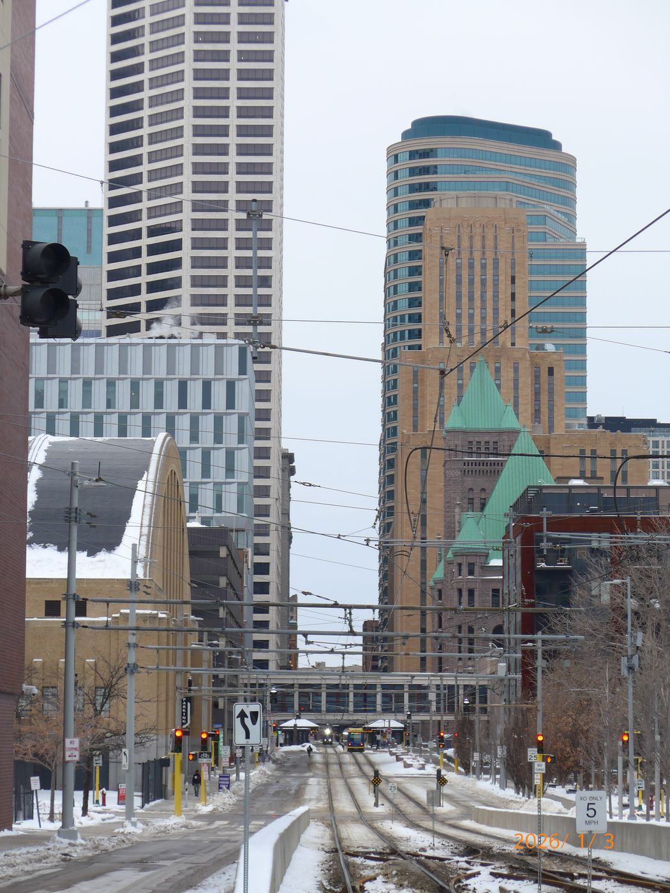
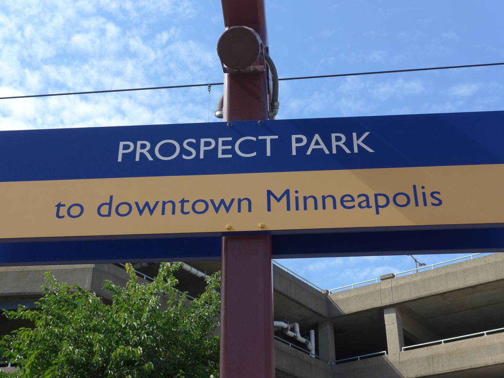
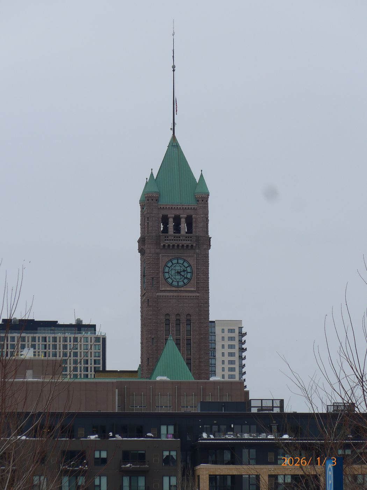
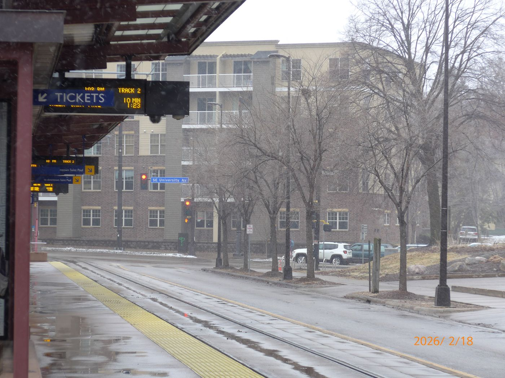
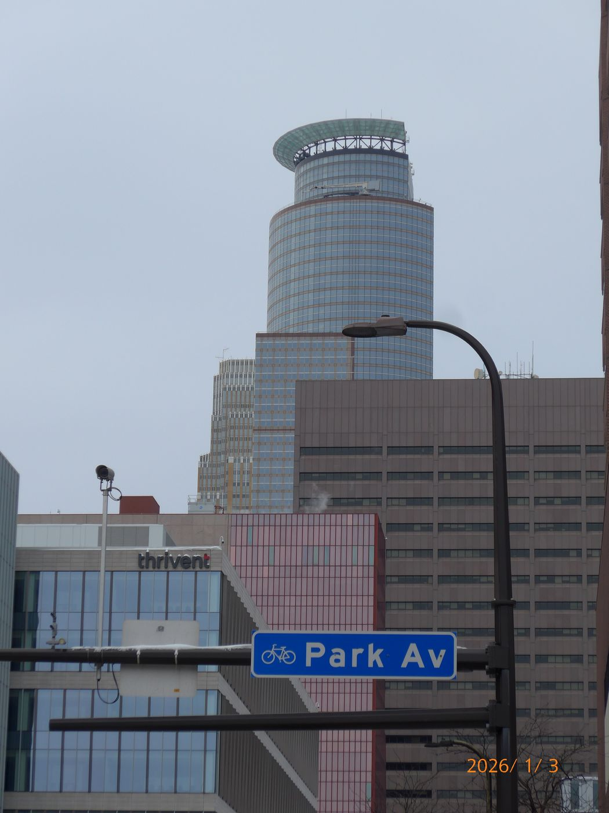
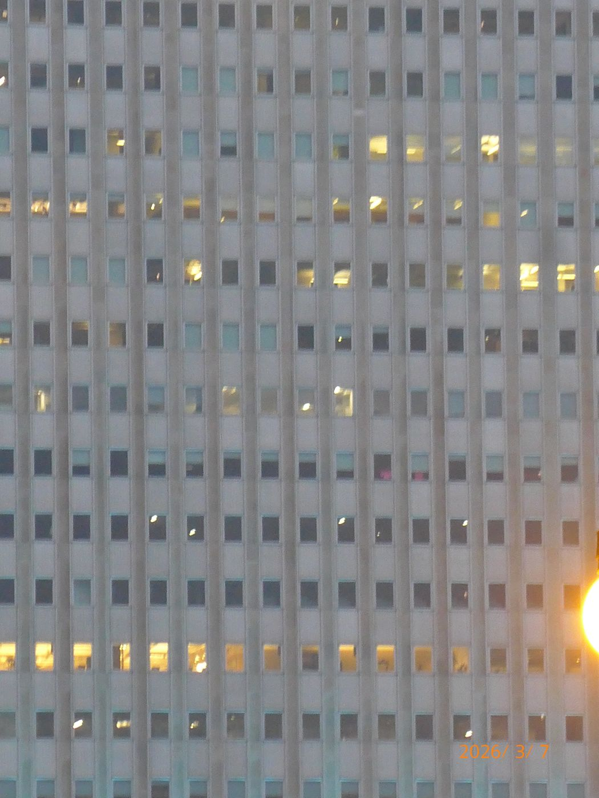
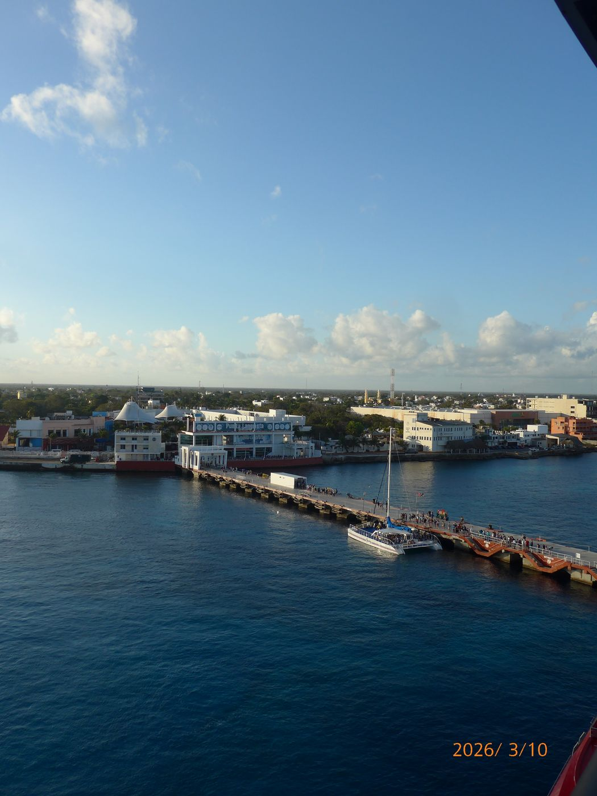
相机 Leica C (Typ 112)Leica D-Lux 8Fujifilm X Half
Writing
写中文小说。奇幻那几部笔调偏冷；《晚自习》换了一种写法，走青春校园的路子。常出现的两个名字是沈玦和谢霜。
写穹华都的事，两条时间线，主角是安布罗斯和韦瑟。笔调冷，靠场面说话，不替读者解释。它最早是从一篇艾尔登法环同人《安布罗斯与白蔷薇》里长出来的。
深圳南山。一个成绩一般、常年游泳的高一男生，意外造出了一个有意识的 AI，这件事他谁也不能说。
从战象、持金刚刃的修女、火枪和巨人，一路打到黑白两条龙的骑士决斗。剑一直没折。
深圳的带货主播穿进王府当了格格。她不肯束肩，靠算账站住了脚，第三章被召进了京。
镜湖城和白昼塔，宫廷加军旅，主角叫铃。
Swimming
从小练游泳。2018 年游进国家二级，高中靠游泳特长进了深圳育才中学。到了大学还在比，2024 年拿过四川省大学生比赛的 100 米自由泳第一。
现在想晚上去学校的泳池游。
钢琴。2017 年考到中国音乐家协会十级，业余考级的最高一级。
| 年份 | 比赛 | 项目 | 名次 |
|---|---|---|---|
| 2024 | 四川省大学生游泳比赛 · 男子 C 组 | 100 米自由泳 | 第 1 |
| 2024 | 四川省大学生游泳比赛 · 男子 C 组 | 50 米自由泳 | 第 2 |
| 2024 | 四川省大学生游泳比赛 | 优秀运动员 | — |
| 2024 | 短池游泳大师赛 · 18–24 岁组 | 25 米蝶泳 | 第 2 |
| 2024 | 短池游泳大师赛 · 18–24 岁组 | 50 米自由泳 | 第 3 |
| 2024 | 短池游泳大师赛 | 8×50 米自由泳混合接力 | 第 3 |
| 2018 | 国家二级运动员 | 100 米自由泳进 1:05 | 达标 |
The cat
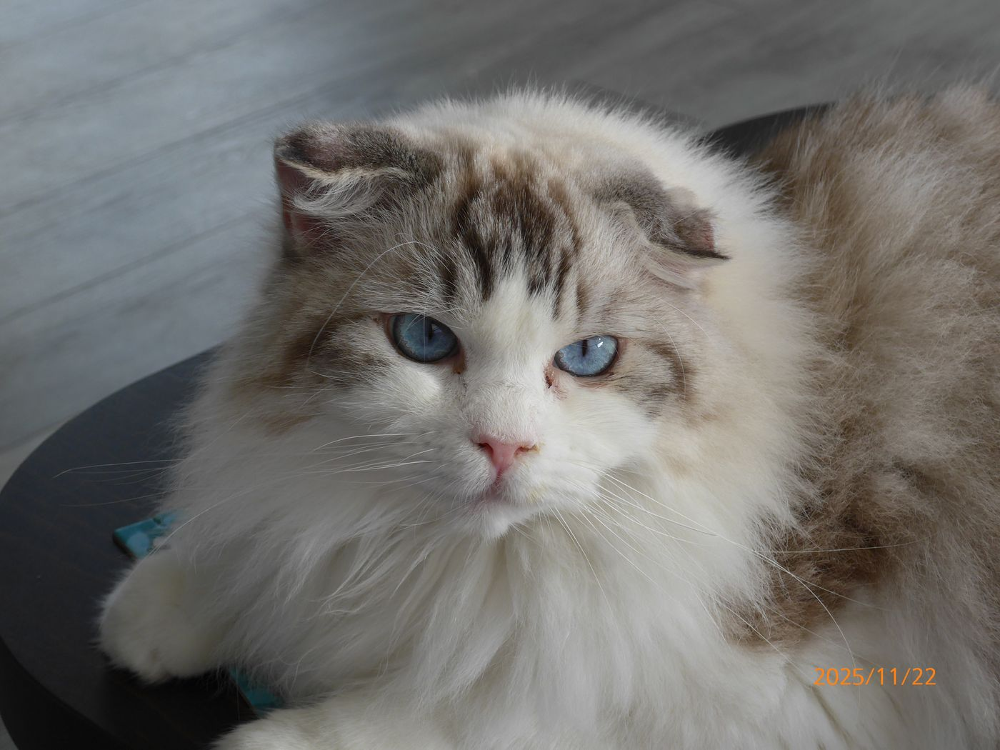
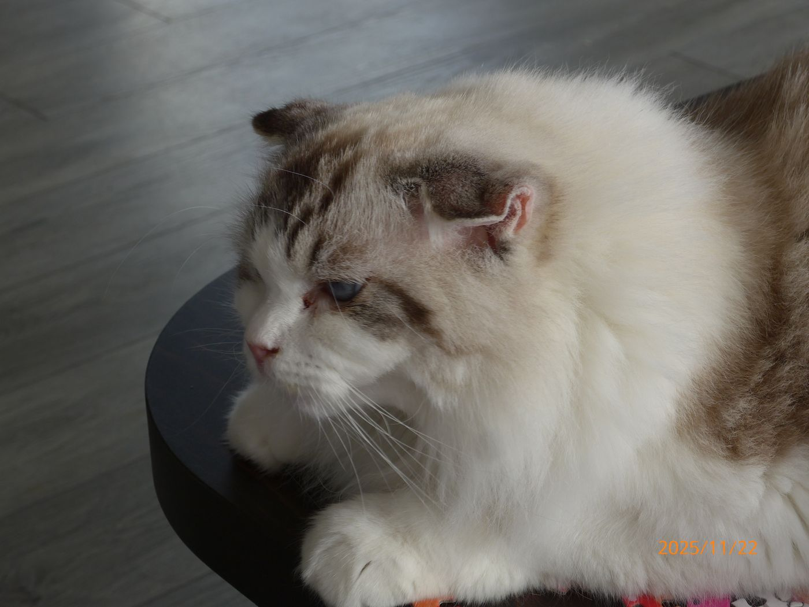
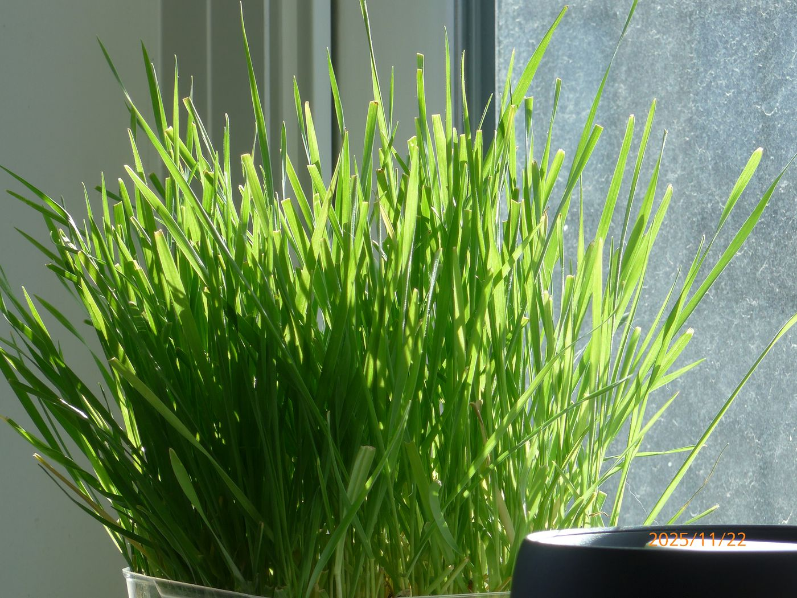
Momo 是我的猫。它不吃生肉，丢给它的生肉会被叼出碗，放在旁边地上。
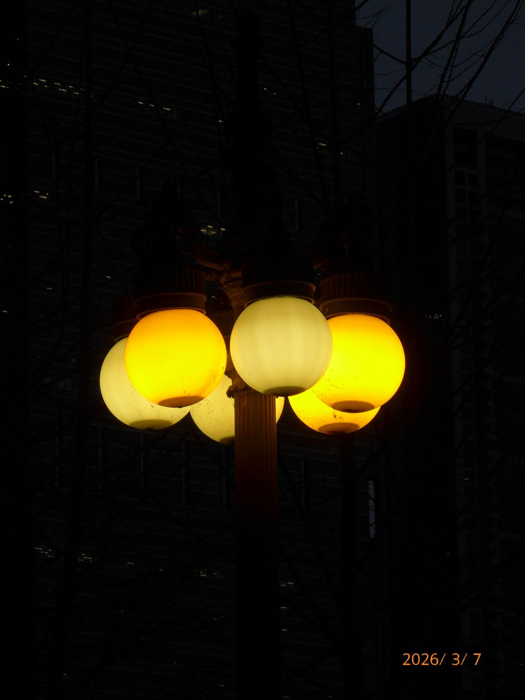
Night drive
我迷一整套清冷、可控的感觉。想象自己是个把凡事都处理好了的司机，开得很自在。
平时开一台 2021 年的 Subaru Crosstrek，看过一台 1999 年的丰田皇冠 JZS155。这个站的颜色也是这么来的：淡金配奶白，深色模式照着深夜高速配。这张灯拍于 2026-03-07。
Making
自己动手做皮具。
一把 8.99 美元的 HERSAUL 西洋剑拆信刀，我想让它看起来打过很多仗：拿 Temu 买的那把日式短刀往一侧刃上敲缺口，只让它用一边，剑脊到最后被敲弯了。那把短刀之前照着 Gael 的样子做过旧。
两个可动手办做了战损。一只全靠刀刻，伤都在躯干；另一只整个用火烧，表面蚀掉一层。最后拿那把短刀摆了一个从胸口捅穿的造型。
Collecting
猛犸象牙、独角鲸牙。
手上有一把 CIVIVI。喜欢简单的样式，不要战术风；柄最好是木头的，比如非洲花梨、黑檀，拿在手里像盘文玩一样盘出包浆。
凤眼菩提最近盘出了色差，还在想办法追色。
Games
Books
电子书架上现在放着这些。
Tinkering
TypeScript · Electron · OpenAI API
想做一个有人格、会自己想事情的桌面 AI。身份内核、内心世界、内心独白、长期记忆、主动找人聊天都写了，能打包成 Mac 应用。5 月底卡在启动，窗口一直停在「正在连接人格引擎」。文件夹我起名叫「我最伟大的成就和失败」。
一套给 AI 的规则
AI 一人两角：裁判，和十五世纪的骑士罗兰·冯·埃森巴赫。对手是一个能召唤任何能力的人。伤害按真实物理算，罗兰按真人的速度变强，每场打完用他自己的口气写复盘。
拿旧电脑跑本地模型，琢磨多智能体怎么搭；用 Midjourney 给小说画氛围图。
Daytime
白天是神经科学本科生。一直好奇的是意识、具身认知，还有电压成像。以后想往计算生物信息那边走。
CBS 院长本科科研项目。实验室研究花蜜是怎么做出来的。有种叫 Melianthus 的花，花蜜是黑的：没食子酸变成鞣花酸，再跟铁结合，和中世纪的铁胆墨水是一个道理。我想往计算那边靠。
一学期只研究一个没人研究过的人类基因。我挑的是 LACTBL1，579 个氨基酸，在视网膜里表达最多。
2026 年春天的课程项目。斑马鱼幼体泡在聚苯乙烯微球里七天，存活率和心率都没变，乳酸先升上去了。论文是我自己写的。
写视觉经验怎么塑造小鼠视网膜节细胞：眼睛看到的东西，会不会改变这些细胞的基因表达和成熟。